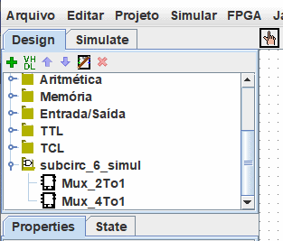

Bibliotecas do Logisim
Cada projeto Logisim é também uma biblioteca que poderá ser carregada em outros projetos: basta salvar em um arquivo e depois carregá-la como biblioteca em outro projeto.
Basta salvá-lo em um arquivo, depois em outro projeto selecione o arquivo usando o menu | Projeto |→| carregar biblioteca |→| biblioteca do logisim... | para carregá-lo.
Todos os circuitos definidos no primeiro projeto estarão disponíveis como subcircuitos para o segundo. Esse recurso permite reutilizar componentes comuns em projetos e compartilhar componentes favoritos com seus colegas (ou alunos).
Abaixo do nosso projeto carregado como uma biblioteca está disponível no painel de navegação.

Nota: biblioteca não deve conter um circuito com o mesmo nome de um circuito já presente no projeto.
Cada projeto possui um "circuito principal", que poderá ser alterado para se referir ao circuito corrente de acordo com a opção Marcar Como Principal no menu | Projeto |→| Tomar como circuito principal |. O apenas significa que o circuito principal é o único a ser exibido quando você abrir pela primeira vez o projeto. O nome padrão do circuito em um arquivo recém-criado ("Principal") não tem nenhum significado algum, e você pode sentir-se livre para apagar ou mudar o nome desse circuito.
Com uma biblioteca Logisim carregada, você terá permissão para ver os circuitos e manipular seus estados, mas o Logisim irá impedi-lo de alterar os aspectos dos circuitos e outros dados armazenados no arquivo.
Se você quiser alterar um circuito em uma biblioteca já carregada, então, será preciso abri-la separadamente, no Logisim. Assim que você a salvar, outro projeto deverá carregar a versão modificada imediatamente, mas se isso não acontecer, você poderá com usar o botão direito do mouse sobre a pasta da biblioteca no painel do explorador e escolher | Carregar Biblioteca.
Próximo: Guia do usuário.